function entrar2(){
alert('Informando Nome e Sobrenome ');
var area2 = document.getElementById('area2');
var nome = prompt('Digite o seu nome');
var sobreNome = prompt('Digite o seu sobrenome');
area2.innerHTML = valor + ' ' + nome + ' ' + sobreNome ;
alert('Informando Nome e Sobrenome ');
}
Arrays
1 - Array / listas
1.1 criar a lista:
var lista = [ "Joao", "Pedro", "Lucas", 15]
1.2 - pesquisar na lista:
lista.indexOf("Lucas") reusltado=2 ou lista.indexOf("Bartolomeu") resultado=-1
1.3 removendo o último:
lista.pop();
15
1.4 removendo o primeiro:
lista.shift();
'Tarcisio'
1.5 Alterando o conteúdo do índice
lista[0] = 'João da Silva';
'João da Silva'
1.6 Adicionando item na lista
lista.push('Jose')
5
1.7 Comparação
if(lista.indexOf("Jose") > -1){
alert("item enontrado com sucesso!");
}else {
alert("Não está na lista!");
}
Loops
1 - while
valores separados sendo 1 dentro do parenteses:
2 - For
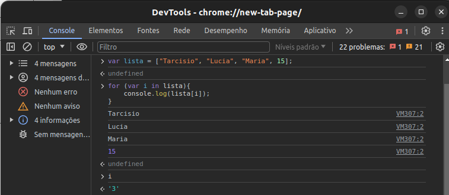
function loopRepeticao(){
for(a = 0 ; a<3; a++){
alert('no loop e for o valor de a é igual : ' + a)
}
}
3 - switch
Temporização
Executa atualização na tela indefinidamente exemplo: de 1 em 1 segundo atualiza o valor na página.
Outro exemplo é executar uma ação após um tempo determinado
WEB STORAGE - Cookies e Sessions
Variáveis
Diferença entre var , let e const
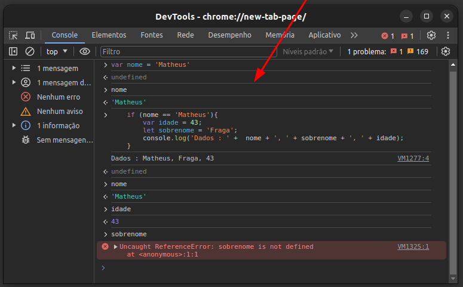
A const é constante e o valor da variável nao muda.
Exemplo: const idade = 43;
o valor de idade não permite mudar
Concatenando e trabalhando com Strings dinâmicas
19 - Usar desconstrução em objetos e arrays
20 - Spread Operator
consiste em juntar valores de variáveis através de ...
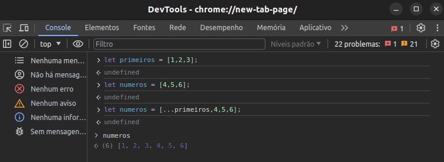
caso não colocasse os ... a variável números teria uma adição do array "primeiros".
Outro exemplo é a junção de dados para um objeto:
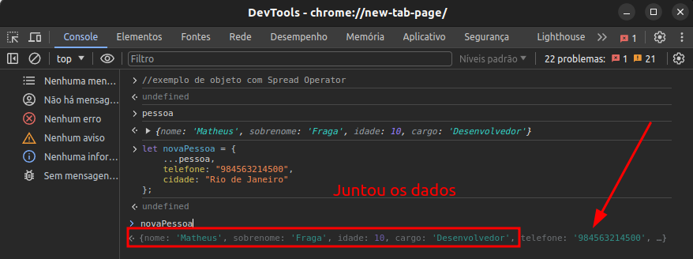
Os dados passam a ser o objeto novaPessoa também.
este mecanismo é muito utilizado quando é necessário reaproveitar dados para uma mesma operação.
outro exemplo com function:
a função cadastroPessoa é acionada recebendo os valores passados na variavel info e ao mesmo tempo retorna o objeto novosDados e imprime no log do console.
21 - Rest Operator
Tem similaridade com Spread operator
22 - Operação em Array
A partir do Java Script ES6 não precisa de loops como for para manipular os arrays
map
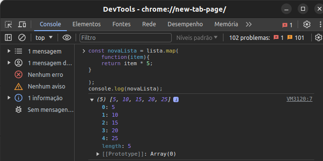
index
no map também tem como passar um index
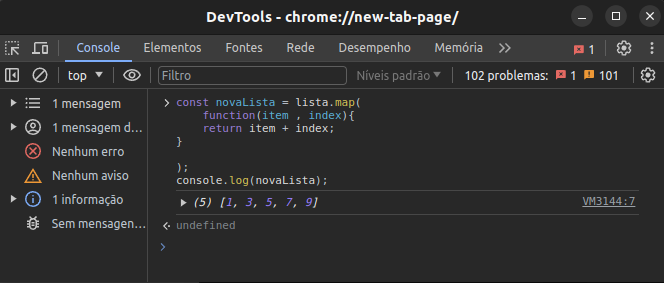
reduce
agente consegue somar todos os itens da lista de forma pratica
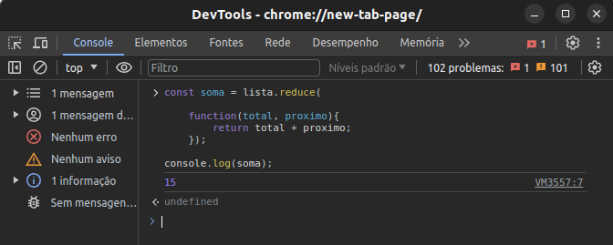
find
retorna um valor caso exista, no exemplo abaixo procura o valor 4 e devolve o valor 4 encontrado
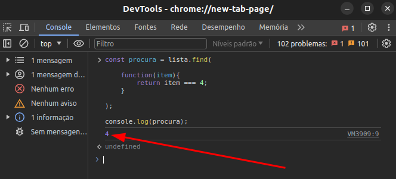
23 - Funções anônimas
são funções sem Nome e simplificadas
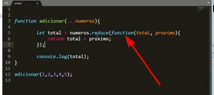
melhorando ainda mais com => (apaga function e na frente dos parametros coloca =>)
colocar "=>" é fazer função anônima
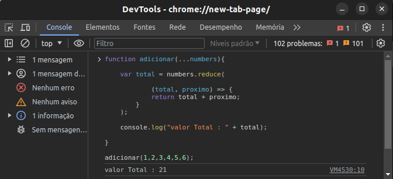
Reduzindo mais ainda como se trata de um linha simples de return
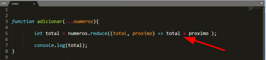
24 - Metodos includes, endWith e startsWith
include
O includes retorna true ou false verifica se o dado está na lista
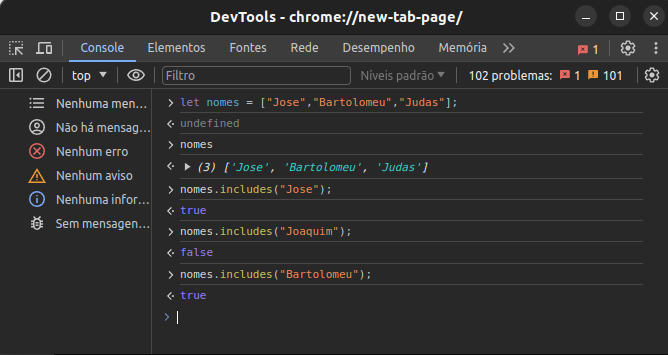
endWith
O endWith verifica se a variável termina com o valor passado
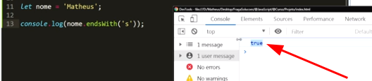
startsWith
O startsWith verifica se a variável começa com o valor passado
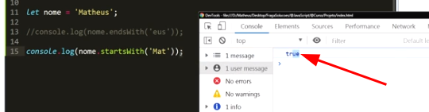
24 - Metodos some e every
some
Some (algum) verifica se tem algum dado
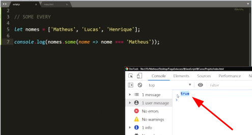
every
Every também devolve o callback mas passa por todos os índices, tipo um array de dados.
no exemplo abaixo temos um array de objetos, verificando se todos são maiores de 18 anos:
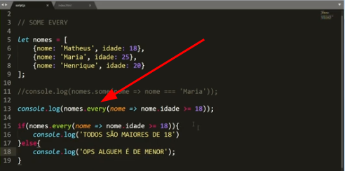
A resposta é true porque todos tem idade >= 18 anos